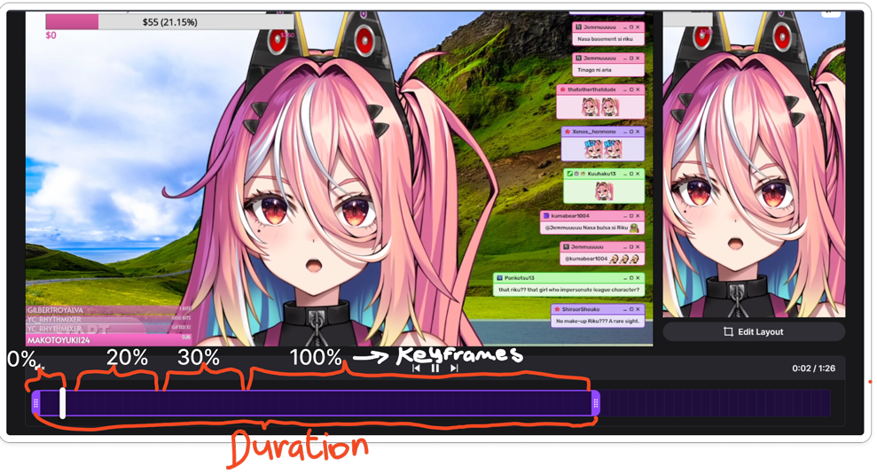

What is CSS Animation?
CSS animation is a module that makes element animated without using javascript.
Basic Animation Syntax
/* Syntax 1*/
@keyframes example {
from {opacity: 0;}
to {opacity: 1;}
}
/* Syntax 2*/
@keyframes example {
0% {opacity: 0;}
50% {opacity: 1;}
100% {opacity: 1.5;}
}
.element {
animation: example 2s ease-in-out;
}
What Does It Do?
CSS animation allows developers to animate the values of CSS properties over time using keyframes.
Analogy

Basic Animation Syntax
@keyframes example {
0% {color: red;}
20% {color: green;}
30% {color: blue;}
100% {color: violet;}
}
.element {
animation: example 2s ease-in-out;
}
Keyframes (@keyframes)
– Define the animation states.
Animation Sub-properties
– Control how the animation behaves.
- animation-name:
- animation-duration:
- animation-timing-function:
- animation-delay:
- animation-iteration-count:
- animation-direction:
- animation-fill-mode:
Why Would You Use It?
CSS animations are primarily used to create high performance visual effects without needing to use javascript or adding videos/gifs.
Make
AweSoMe!
wOrK
lifeStyle
Everything
Where Would You Use It?
- Enhancing user interaction
- Creating loading indicators
- Animating Text for Visual Impact
Loading
Pros and Cons
Pros
- Speed and Performance
- Guiding the User
- Professional Feel
Cons
- Slowing down the user
- The "Lag" Factor
- Motion Sickness and Accessibility
Code Demo
@keyframes my-animation {
from {
background-color: #ff7a59;
width: 300px;
top: 10px;
}
to {
background-color: #33475b;
width: 50px;
top: 100px;
}
}
.animation-box {
/* animation properties */
animation-name: my-animation;
animation-duration: 2s;
animation-direction: alternate;
animation-iteration-count: infinite;
animation-timing-function: linear;
/* other properties */
width: 300px;
height: 100px;
border-radius: 10px;
position: relative;
left: 0;
right: 0;
margin-left: auto;
margin-right: auto;
}